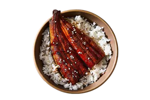
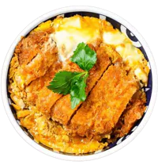
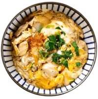

-200w.png)
Gyudon (Beef Rice Bowl)
Gyudon is a popular Japanese dish consisting of thinly
sliced beef and onions simmered in a savory sauce of soy
sauce, mirin, and sugar. The beef mixture is served over a
bowl of steamed rice, topped with pickled ginger and green
onions. Gyudon is a filling and satisfying meal that can
be enjoyed any time of the day.

Unadon (Eel Rice Bowl)
Unadon is a Japanese dish of steamed rice topped with
grilled eel fillets. The eel is coated with a sweet soy
sauce and caramelized over a charcoal fire. The dish is
served in a large bowl and sprinkled with sanshō pepper
for extra flavor. Unadon is a delicious and satisfying
meal that can be enjoyed at home or at specialized
restaurants.

Katsudon (Pork Cutlet Rice Bowl)
Katsudon is a popular Japanese dish that consists of a
breaded and fried pork cutlet served over a bowl of rice
with a savory sauce and eggs. It is a hearty and
satisfying meal that can be enjoyed any time of the day.

Oyakodon (Chicken Egg Rice Bowl)
Oyakodon is a Japanese dish that consists of chicken and
eggs cooked in a savory broth and served over rice. The
name literally means "parent-and-child rice bowl", as it
uses both chicken and eggs. Oyakodon is a simple and
satisfying meal that can be enjoyed any time of the day.

Tekka don (Tuna Rice Bowl)
Tekka don is a Japanese dish consisting of sushi rice
topped with raw tuna slices marinated in a soy sauce-based
sauce. It is garnished with nori, shiso, scallions and
sesame seeds for extra flavor and texture. Tekka don is a
satisfying and refreshing meal that can be enjoyed any
time of the day.

Kaisendon (Seafood Rice Bowl)
Kaisendon is a Japanese dish that consists of fresh
seafood, such as tuna, salmon, shrimp, and scallops,
served over a bowl of rice. It is a simple but delicious
way to enjoy the flavors of the ocean. Kaisendon is often
accompanied by soy sauce, wasabi, and ginger for dipping.